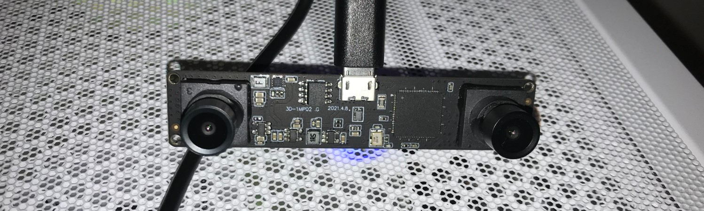
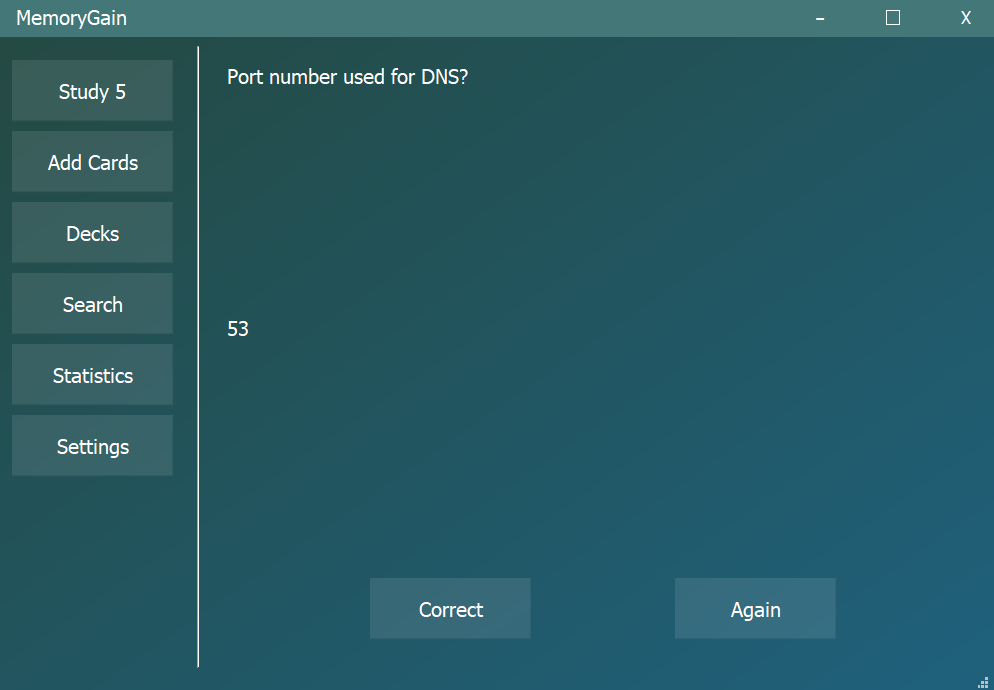
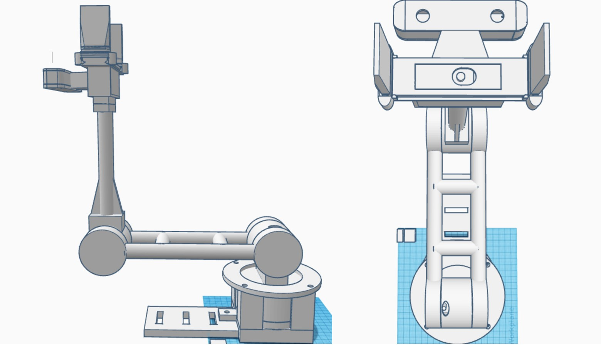

Yolov8 With Stereo Depth:

Designed for use with stereoscopic cameras. Yolov8 is used to detect objects in both cameras, then my algorithm pairs up bounding boxes of the same object and triangulates depth. Further details available here.
MemoryGain:

Flashcards app that uses machine learning to aid in the learning process. Application made with PyQt. To install and find further details click here.
Voice Controlled Robot Arm:

Designed, 3d printed, and wrote software for a robot arm controlled by natural language voice commands. It works as follows:
- OpenAI's Whisper model transcribes audio.
- User's voice command is passed to Microsoft's Phi LLM, which then decides whether or not to retrieve an item and, if so, what item to pick up.
- If the LLM confirmed the user wanted an item to be retrieved, hard-coded Python code uses visual data from the "Yolov8 With Stereo Depth" program and communicates with the Arduino board to guide the arm to pick up the object